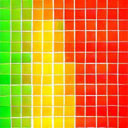

BusyTime is a light displaying your busy status according to your selected Google, Outlook, Apple, Yahoo, CalDAV or ICS calendars. It plugs into a USB-C for power and produces a light to indicate when the calendar indicates it is busy.
Create a new settings file from defaults, or load an existing one to edit.
Need help? Check out the Settings Guide for detailed instructions.